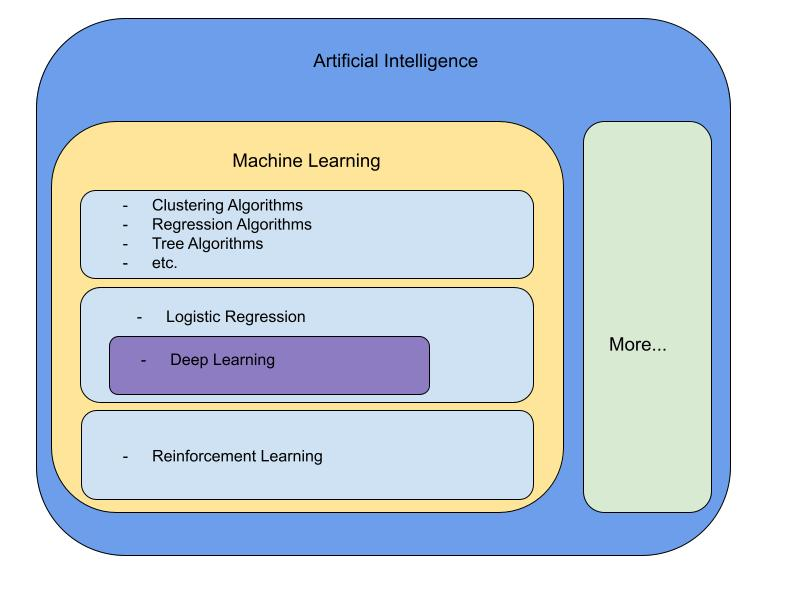

What is Artificial Intelligence?
By Matthew Viafora

What is Artificial Intelligence (AI)? Of course when you hear the words “artificial
intelligence”, you might think of media portrayal of it like “I, Robot” which could make you imagine it as a horrific science fiction fantasy, but AI is a very real branch of computer science/mathematics that is used every single day in academia, industry, and your own personal cell phone, computer, tablet, etc.
A common definition would be “the simulation of human intelligence in machines that are programmed to think like humans and mimic their actions. The term may also be applied to any machine that exhibits traits associated with a human mind such as learning and problem-solving.” But what does this actually mean? And how can you get involved with AI for your personal/work projects? I’ll help to try and explain this new and exciting branch of computer science/mathematics. By the end of this article, you will have a basic understanding of artificial intelligence and machine learning as it is used in the world today!
Artificial Intelligence is a very broad subject that encompasses many different algorithms and spans across many different fields of mathematics including: Calculus, Probability and Statistics, Linear Algebra, etc. In my research online, I have found many different organizational methods for artificial intelligence. In this article I will go over an introduction to artificial intelligence as it is used in the world today, more specifically I will go over machine learning, which is the branch of artificial intelligence that is most commonly used in academia and in many different areas in industry.
Just as Artificial Intelligence encompasses many different subjects, machine learning is a term used to describe different types of algorithms used to make predictions (usually) based on previous data. There are two definitions of machine learning that are used, an older more outdated one and a newer more appropriate one. I’ll go over why each one makes sense and why each definition maybe doesn’t encompass all of the machine learning field as it is new and changing every day. Arthur Samuel was a computer scientist who popularized the term “machine learning” in 1959 and defined it as “the field of study that gives computers the ability to learn without being explicitly programmed”. This definition is outdated because it was made long before modern computers and the ability to store and manipulate massive amounts of data like we can today. Modern machine learning involves taking data, training it to fit some parameters, then making predictions based on that trained data. Here is basic four step machine learning programming process that is used to train machine learning models today:
(data → training algorithm → trained model → predictions)
This four step process is how most machine learning engineers would solve a problem with machine learning. So, while this older definition does fit the parameters of this general approach to modern machine learning, it is a bit too broad. The newer, more refined definition of machine learning gives a better, more specific approach. Thomas Mitchell is a computer scientist at Carnegie Mellon University who defined machine learning as “A computer program [that] is said to learn from experience E with respect to some class of tasks T and performance measure P, if its performance at tasks in T, as measured by P, improves with experience E.” This definition is much more fitting toward our four step machine learning process we outlined above. In our case, the data is “experience E”, “tasks T” is our problem that we are trying to solve, and “performance measure P” is our measure of performance in our training algorithm. So as you can see by this definition, it seems that all machine learning models learn by taking in experience (data), and improving on a set of tasks by being fed more and more data; so the more data the better, right? Well, this is not always the case as not all data is created equal, but that is a whole different topic for another article. My point is that this definition is very specific to certain types of machine learning algorithms like regression, classification, etc. but does not encompass all machine learning algorithms. For example, reinforcement learning is a newer field of machine learning that does not learn from previous data but instead learns from real-time simulation, but we’ll get more on that later. In this diagram below, I have laid out a basic organizational representation of artificial intelligence as a whole while focusing on some basic algorithms commonly used in machine learning:
Note: This is NOT an exhaustive list of all of the different areas of machine learning and artificial intelligence, but is only an introductory visual representation for those who are new to the subject.
In this diagram, I have organized machine learning into a few different categories, each with their own distinct characteristics that make the algorithms different from each other. Each box could be broken down more into different categories for further analysis. Before I go into more detail I want to explain some important key terms used in machine learning: supervised and unsupervised learning.
- - Supervised learning: An algorithm that learns based on data and an input mapping to an output. What this means is that in a supervised learning approach, the input data is already labeled to an output and when making predictions, the model attempts to predict a certain label based on the input features.
- - Unsupervised learning: An algorithm that learns based on unlabeled data. What this means is that in an unsupervised learning approach, you are usually looking for patterns in a messy, confusing, unlabeled dataset. (Unsupervised learning is mostly used in clustering problems).
In the first box in the machine learning section, we have a wide range of commonly used machine learning algorithms. These include regression algorithms, tree algorithms, clustering algorithms and more. Here is a little bit more information on each of these topics:
- - Regression algorithms: Regression algorithms output a continuous value based on a set of input features from the data that is fed into the algorithm (remember the four step process from above). Regression problems are used all of the time for decision making problems, for example if you wanted to predict the price of a stock on a certain day, you might use a regression problem since a stock price is a continuous value.
- - Tree Algorithm: Decision tree algorithms are used to make predictions from observations about an item to conclusion through a series of trained branches.
- - Clustering Algorithm: Clustering problems are unsupervised and attempt to interpret and find natural groupings of data within a feature space. For example, a clustering algorithm might take in a dataset containing house information and group together the houses with similar characteristics such as house size, price, location, etc.
In the second box of the machine learning section, we have “logistic regression” and a subcategory called “deep learning”. While the name “logistic regression” may lead you to believe that it is a regression algorithm, it is actually a classification algorithm that is similar to linear regression. Logistic regression works similarly to linear regression except that the output is run through an activation function which limits the value to a discrete number like 0 or 1. This output can then be used to determine a particular output class based on the set of input features. An example of logistic regression being used over linear regression would be in the case of identifying flower types based on a set of input features like petal size, petal shape, stem type, etc. The subcategory “deep learning” takes the simple idea of logistic regression and utilizes it over a series of layers defined by hyperparameters in order to determine an output. Logistic regression is essentially a one layer neural network. A Neural network is a series of connected nodes that was inspired by the human brain to make predictions. As you can see this can quickly lead down a deep rabbit hole, so I won’t explain neural networks or deep learning any further, but deep learning and neural networks are a very exciting area of artificial intelligence/machine learning and is what personally got me inspired to learn more about this field. (Be sure to be on the lookout for more articles about deep learning and neural networks in the future!)
Finally, we have the third box of the machine learning section which is reinforcement learning. Reinforcement learning is a very new area of machine learning that is very exciting. It involves an “agent” in an “environment” that makes decisions to maximize a reward value. As you can see this can fall off of Mitchell’s newer, more specific definition of machine learning. There is no data given to a reinforcement learning simulation or agent. In recent years, OpenAI created a reinforcement model utilizing the popular video game “Dota 2” as a research simulation (https://openai.com/five/). The model was trained on over 10,000 years of making decisions in games against itself to learn. The model was then put up against professional Dota players where it was able to outsmart and outperform them!
As you can see there is so much loaded into the word “artificial intelligence” and we barely just scratched the surface. There is constant research in academia for both theoretical and applications of different types of machine learning algorithms, most of which is free/open source to read and utilize in your own projects. In this article, I did not get to explain some topics like natural language processing (NLP), or computer vision, which are applications of some of the basic machine learning algorithms that we went over in this article. (Be sure to be on the lookout for my article on the different applications of machine learning in the future!).
I hope that you enjoyed this basic introduction to some of the machine learning algorithms used everyday!